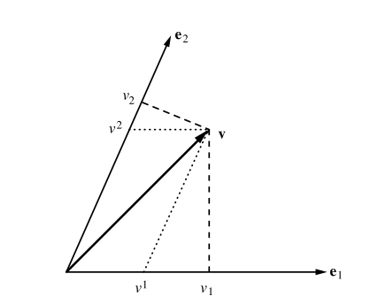

Dado un espacio vectorial $V$, definimos $V^*$ como el espacio de aplicaciones lineales de $V$ en $\mathbb{R}$ (formas lineales).
Dada una base en $V$, $\{e^i\}$, llamamos base dual a $\{e_i\}$ donde los $e_i$ son formas verificando:
$$ e_i(e^j)=\delta_i ^j \textrm{ (delta de Kroneker)} $$At a first glance, there is no natural isomorphism between $V$ and $V^*$. But if we have in $V$ an inner product $g$, we automatically do have a natural isomorphism from $V$ into $V^*$:
$$ T(v)=g(\cdot, v) $$And reciprocally: given an isomorphism we recover a bilinear form (not necessarily an inner product), which is non degenerated. Given $\phi: V\rightarrow V^*$ we can define
$$ b:V\times V \rightarrow \mathbb{R} $$by means of $b(v_1,v_2)=\phi(v_1)(v_2).$
But you can argue that we have a natural isomorphism: the one which sends $e^i$ to $e_i$. But it is needed to fix a basis. In this case, the bilinear for associated is the one with matrix $\left(\begin{array}{cc c}1 & 0& \cdots \\ 0 & 1 & \cdots \\ \cdots &\cdots & \cdots\end{array}\right)$ in the basis $\{e^i\}$.
So in a vector space is equivalent:
1. Fixing a basis
2. Fixing an non degenerated bilinear form.
3. Fixing an isomorphism with its dual, with conditions.
Además, el producto escalar original induce otro en $V^*$. Se puede ver "a mano" o pensando que, igual que hay una correspondencia entre productos escalares en $V$ e isomorfismos de $V$ en $V^*$, la hay entre productos escalares de $V^*$ e isomorfismos de $V^*$ y $V^{* *}$. Pero es que $V^{* *}=V$, luego la secuencia es: el producto $g$ induce el isomorfismo $T$ y como $T^{-1}$ también es isomorfismo induce un producto escalar $g^*$ en $V^*$.
Moreover, the inner products $g$ and $g^*$ are inverse, in the sense that for a vector $v$
$$ g^*(g(v,_), -)=v $$In Penrose abstract index notation we would have:
$$ g_{ab}g^{bc}=\delta_a^c $$Let $v=\sum_i v^i e^i$. It is clear that it has a correspondent $v^*\in V^*$ such that $v^*=\sum_i g(v,e^i) e_i$. We write $v_i=g(v,e^i)$ and call it the covariant components of $v$, while $v^i$ are the contravariant ones. Since $g$ has an inverse, we can recover the contravariant components from the covariant ones: $v^i=g^*(v^*,e_i)$. Using the matrix form of $g=(g_{ij})$ and $g^*=(g^{ij})$ respect to the chosen basis we would write
$$ \sum_i v^i e^i=\sum_i \sum_j g^{ij}v_j e^i=\sum_i \sum_j g^{ij} g(v,e^j)e^i $$and so
$$ v^i=\sum_j g^{ij} g(v,e^j) $$Compare with the usual orthogonal case $v^i=g(v,e^i)$.
Here you can compare the $v^i$s with the $v_i$s:

This ideas, I think, can be generalized to general frames in homogeneous spaces. See general covariance and contravariance.
________________________________________
________________________________________
________________________________________
Author of the notes: Antonio J. Pan-Collantes
INDEX: